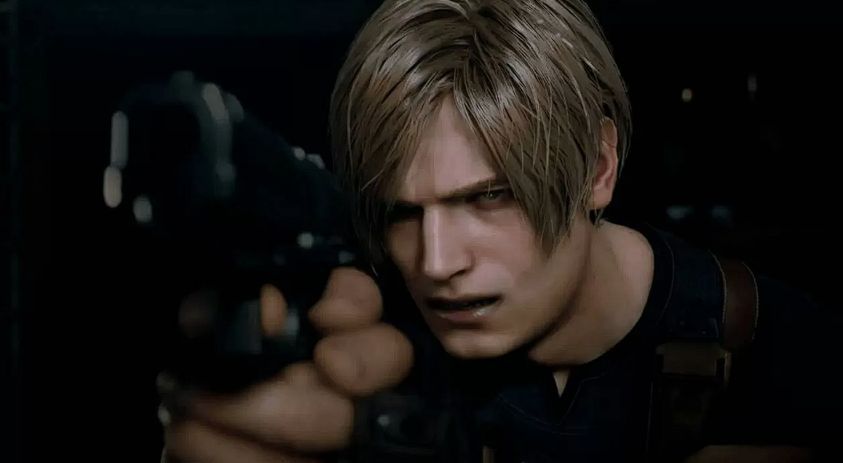

Resident Evil 4 Remake tendrá Nuevo Juego Plus, modo foto y varias opciones de control
Yasuhiro Ampo y Kazunori Kadoi, directores de Resident Evil 4 Remake, han vuelto a compartir nuevos detalles acerca de este esperado lanzamiento de la famosa saga de Capcom en una nueva entrevista con Game Informer. A grandes rasgos, se ha revelado que esta puesta al día del clásico lanzado originalmente en Nintendo GameCube contará de lanzamiento con Nuevo Juego Plus, una modalidad que permitirá a los jugadores revisitar la aventura manteniendo el armamento y sus accesorios de la partida anterior, además de un completo modo foto para inmortalizar algunas de las estampas más llamativas del pueblo español en el que se ambienta el juego.